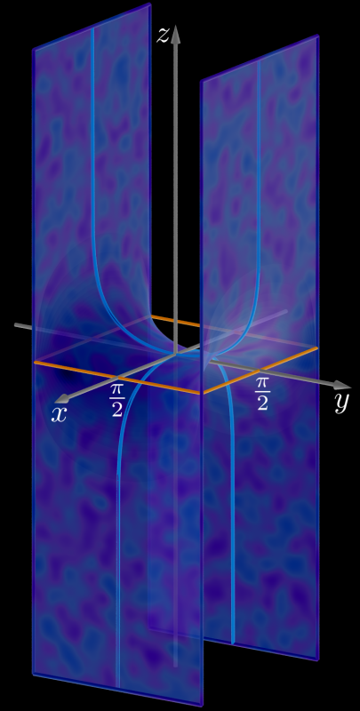

Scherk Minimal Surface
Written by Paul Bourke
December 2000
|
x = u
y = v
z = log(cos(c u) / cos(c v)) / c
|
Attributed to Heinrich Scherk circa 1835.
In the following three images the domain is
-pi <= u <= pi
-pi <= v <= pi
Contribution by Jorge Delgado.
POVRay source code: scherk.pov
|

|
|